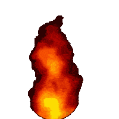
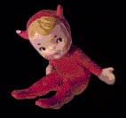

WELCOME TO MY NEW WEBSITE!!!
still in construction, come back soon!!!
THIS WEBSITE IS VERY POPULAR!
YOU WILL GET ADICTED!

Commander Keen Cheats!
CLICK
HERE!!!
for COOL CHEATS !!!
YOU CAN MAKE GREAT WEBSITES TOO USING TRIPOD!
Made with love using:
 WELCOME TO MY NEW
WEBSITE!!!
WELCOME TO MY NEW
WEBSITE!!!
 THIS WEBSITE IS VERY POPULAR!
THIS WEBSITE IS VERY POPULAR!